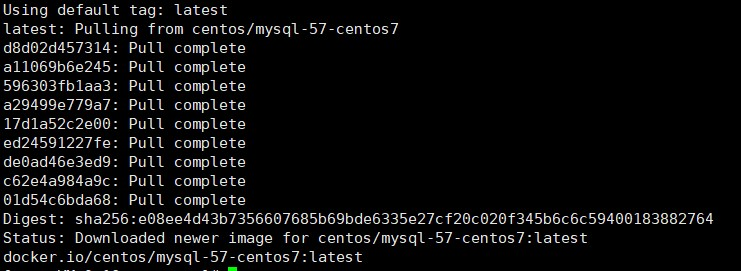
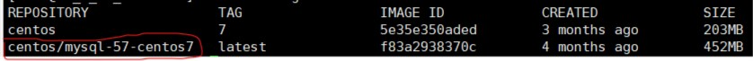
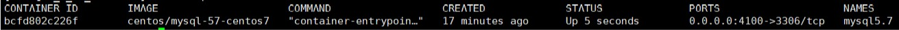
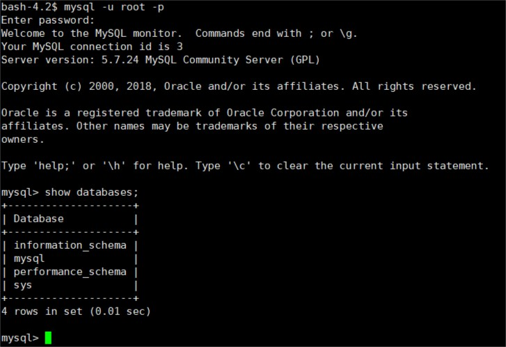
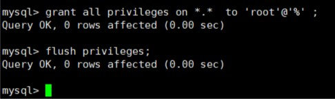
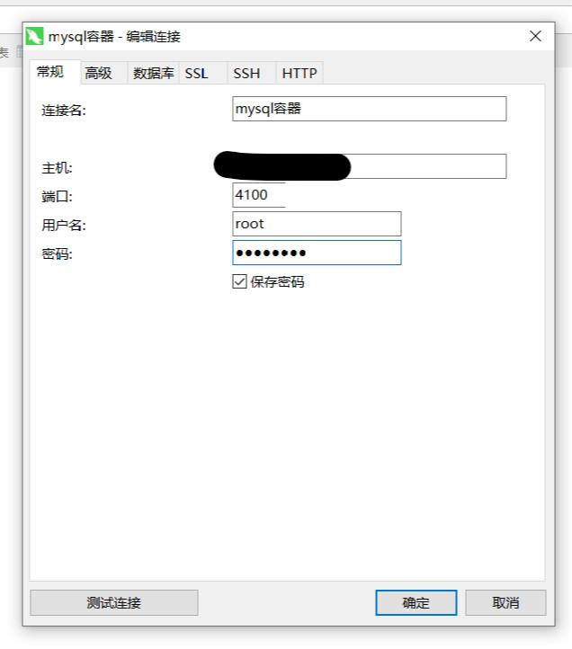
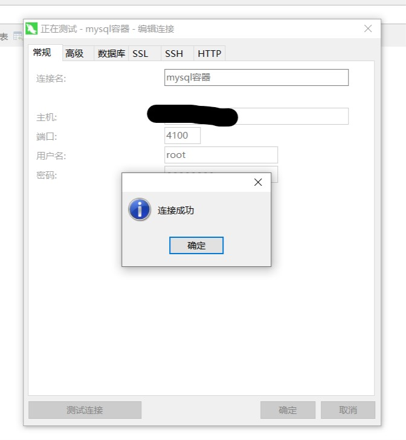

拉取Mysql5.7镜像
这里拉取的Mysql版本是5.7版本
这里不再作搜索，直接拉取：
1 | docker pull centos/mysql-57-centos7 |

查看镜像列表：
1 | docker images |

-----------------------------------------拉取成功-------------------------------------------
创建并启动Mysql守护式容器
1 | docker run -di --name=mysql5.7 -p 4100:3306 -e MYSQL_ROOT_PASSWORD=root centos/mysql-57-centos7 |
- -di：守护式容器
- –name：容器名称
- -p：端口映射，前面的是宿主机，后面是容器的端口
- -e：设置密码
- centos/mysql-57-centos7：基于哪个镜像创建

镜像创建成功，进入该容器，输入用户名，密码不用输直接回车（我也不是很清楚为什么）：
1 | docker exec -it mysql5.7 /bin/bash |

想要让外部工具连接Mysql容器，需要给用户权限：
1 | grant all privileges on *.* to 'root'@'%' ; |
等待Query OK后，再刷新权限：
1 | flush privileges; |

使用Navicat12工具测试连接
-
打开软件，点击左上角的连接，选择Mysql

-连接名：随意
-主机：宿主机的IP地址
-密码：你创建容器时设置的密码
-
输入之后点击测试连接：

提示连接成功